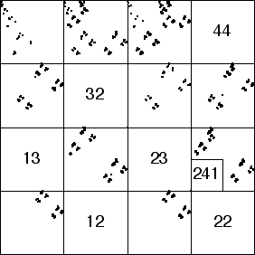

| The picture |
|  |
| contains 4096 points. We can estimate the probability of
each of the 16 pairs by counting the number of points in the corresponding
subsquare and dividing by 4096. The number of points in each address through length 2
can be obtained from the Address Stats menu of the
driven IFS program. In this way, we obtain these nonzero populations |
| n1=1021, n2=637, n3=889, n4=1549 |
| n11=209, n14=812, n21=259, n24=377,
n31=476, n33=53, n34=360, n41=77, n42=637, n43=835 |
|
| Note the address 241 is empty, but both 24 and 41 are occupied. That is, this length 3 address is not
empty as a consequence of forbidden pairs. Is it empty because our data set is too short, or have we detected a forbidden triple
independent of the forbidden pairs? |
| Given the probabilities of the pair transitions, what is the likelihood that address 241 will be unoccupied after 4096 iterations
of this driven IFS? That is, we are testing the hypothesis that all addresses that remain empty for long time series must contain
one of the forbidden pairs 12, 13, 22, 23, 32, 44. If we find it unlikely that address 241 would be visited in 4096 iterations,
then we deduce that 241 probably is a forbidden triple not a consequence of any forbidden pair.
|
| For this calculation, we build a simple Markov process with five states A, B,
C, D, and E: |
| A | 241 has not occurred, and the current string has left-most entry 2 or 3, |
| B | 241 has not occurred, and the current string has left-most entry 1, |
| C | 241 has not occurred, the current string has left-most entry 4, and the previous entry is not 1 |
| D | 241 has not occurred, the current string has left-most entry 4, and the previous entry is 1 |
| E | 241 has occurred |
|
| The transitions between the states of the Markov process are shown in this graph. |
|
| How are we to understand this graph? |
| A → B To move from A to B we must apply T1. Given the left most entry of strings in
A, this is achieved by 2 → 1 or 3 → 1. |
| A → C To move from A to C we must apply T4. Given the left most entry of strings in
A, this is achieved by 2 → 4 or 3 → 4. |
| A → A All other combinations move from A to A. |
| B → A To make the transition B → A, we must apply T2 or T3. This
transition is given by 1 → 2 and 1 → 3. |
| B → B To stay in state B, T1 must be applied again. That is, B → B
is given by 1 → 1. |
| B → D To move from B to D, T4 must be applied. That is, B → D
is given by 1 → 4. |
| C → A To move from C to A, T2 or T3must be applied. That is, C → A
is given by 4 → 2 and 4 → 3. |
| C → B To move from C to B, T1 must be applied. That is, C → B
is given by 4 → 1. |
| C → C To move from C to C, T4 must be applied. That is, C → C
is given by 4 → 4. |
| D → A To move from D to A we must apply T3. (Note that applying T2 takes us to E.)
So D → A is given by 4 → 3. |
| D → B To move from D to B we must apply T1, so D → B is given by
4 → 1. |
| D → C To move from D to C we must apply T4, so D → C is given by
4 → 4. |
| D → E To move from D to E we must apply T2, so D → E is given by
4 → 2. |
|
| Next, we estimate the probability of each of these transitions. |
| Pr(A → B) is (n12 + n13)/(n2 + n3) = (0 + 0)/(637 + 889) = 0 |
| Pr(A → C) is (n42 + n43)/(n2 + n3) = (637 + 835)/(637 + 889) = .9646 |
| Pr(A → A) = 1 - (Pr(A → B) + Pr(A → C)) = 1 - .9464 = .0354 |
| Pr(B → A) is (n21 + n31)/n1 = (259 + 476)/1021 = .7199 |
| Pr(B → B) is n11/n1 = 209/1021 = .2047 |
| Pr(B → D) is n41/n1 = 77/1021 = .0754 |
| Pr(C → A) is (n24 + n34)/n4 = (377 + 360)/1549 = .4758 |
| Pr(C → B) is n14/n4 = 812/1549 = .5242 |
| Pr(C → C) is n44/n4 = 0/1549 = 0 |
| Pr(D → A) is n34/n4 = 360/1549 = .2324 |
| Pr(D → B) is n14/n4 = 812/1549 = .5242 |
| Pr(D → C) is n44/n4 = 0/1549 = 0 |
| Pr(D → D) is n24/n4 = 377/1549 = .2434 |
|
| In the standard language of Markov processes, E is an absorbing state.
That is, once the string enters state E, it remains in state E. |
| In terms of the driven IFS, entering state E means having
points in square 241. So we would like to find the probability of not
entering state E in a string of 4096 points. |
| To do this, we construct the transition matrix for this Markov process.
(Row labels are "to;" column labels are "from.") |
| | A | B | C | D | E |
| A | .0347 | .7199 | .4758 | .2324 | 0 |
| B | 0 | .2047 | .5242 | .5242 | 0 |
| C | .9646 | 0 | 0 | 0 | 0 |
| D | 0 | .0754 | 0 | 0 | 0 |
| E | 0 | 0 | 0 | .2434 | 1 |
|
| Call this matrix of probabilities M. |
| Represent the
probabilities of being in states A, B, C, D, and E by PA, PB, PC, PD,
and PE. |
| Making these into a column vector V, the
effect of one step of the process on the probabilities is the matrix
product |
| M V |
| The effect of 4096 steps is |
| (M4096)V |
| This is very close to the vector (0, 0, 0, 0, 1). Consequently, the
probability that 241 will not occur in a string of length 4096 is very close to 0. |
| That is, we have found it quite likely that the square 241 is empty because of a
real restriction on the underlying dynamics, and not just because the data string is too sort. |